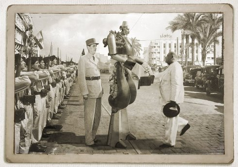

Manivelle: Last Days of the Man of Tomorrow

Fadi [the fdz] Baki
|
LB/DE 2017 B: Fadi Baki – K: Tobias von dem Borne – T: Lama Sawaya – M: Nadim Mechlawi – S: Zeina Abul Hosn – P+V: Niklas Hlawatsch
|
Dienstag 16 okt 20.30 werkstattkino
Mockumentary und Success Story von Manivelle, dem Riesenroboter. 1945 wurde er dem jungen Libanon geschenkt und damals als neuzeitlicher Held gefeiert wurde. Heute spukt er einsam und vergessen in einer verlassenen Villa herum.
Fadi [the fdz] Baki geb. 1977 in Beirut. Mitbegründer des Comic-Magazins Samandal und des libanesischen Animationsfilm-Festivals Beirut Animated. |
| Films Balut 2013 – Shatila 2016 – Manivelle 2018 |